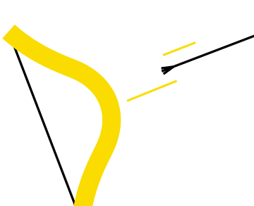
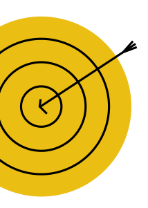
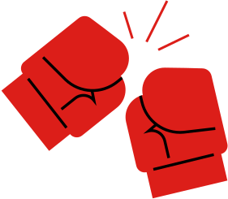
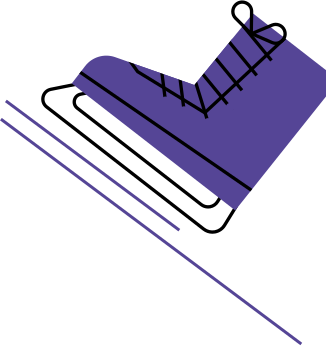
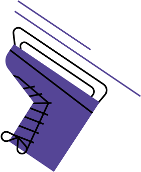
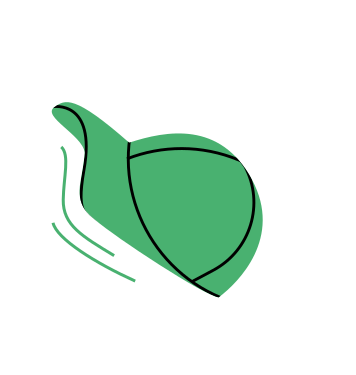
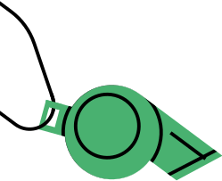

La Course Continue
Salut ! Moi c'est Victoire

2006
Arrivée du plan de féminisation
Un plan de féminisation ? Ces termes sont sûrement très vagues pour toi. Laisse-moi t’expliquer ! Au départ, la majorité des sports ne prenait pas vraiment en compte le public féminin. C’est pourquoi, en 2006, le handball, le basket-ball, le cyclisme et le football s’engagent à créer un plan de féminisation dans leurs fédérations.

Tu te demandes peut-être quels sont les objectifs ? Il y en a plusieurs, mais le but principal est d’adapter la discipline sportive aux femmes et de faciliter l’accès des femmes aux postes à responsabilité. Mais ce plan ne devient obligatoire qu’en 2013 pour tous les sports !

2010
Création des Jeux Olympiques de la Jeunesse
Les Jeux Olympiques de la jeunesse (JOJ), ça ne te dit peut-être pas grand chose ? C’est normal ! Et pourtant, cette compétition s’est voulue paritaire avant les JO classiques. En 2020, par exemple, il y avait 940 sportifs et 940 sportives.

Les JOJ sont destinés aux jeunes athlètes d’élite, âgés de 15 à 18 ans, et sont quasi-semblables aux Jeux Olympiques pour adultes.
Leur but est de rassembler des jeunes du monde entier autour de leurs passions, tout en intégrant une dimension éducative sur la protection des athlètes ou le travail sur la performance, par exemple. L’édition 2024 a lieu dans la province de Gangwon en Corée du Sud. Cette année aussi, les JOJ sont paritaires et deux nouvelles épreuves mixtes ont été ajoutées.
2012
Première femme de l’UFC
Savais-tu que la première catégorie féminine d’Arts Martiaux Mixtes (MMA) a été créée il y a 12 ans ? C’est la catégorie “poids coqs féminins”. La première championne de cette division s’appelle Ronda Rousey, une catcheuse américaine originaire de Californie.

En 2013, elle a affronté Liz Carmouche pour la première ceinture féminine de l’UFC, l’organisation américaine de MMA. On parle ici de la première confrontation féminine de MMA du pays ! Du côté de la France, il a fallu attendre encore un peu, car c’est en 2021 que Manon Fiorot devient la première française à remporter ce championnat.
2019 - 2020
Libération de la parole
Oups, je triche un peu en te donnant deux dates… C’est parce que depuis quelques années, la parole se libère sur les agressions que les femmes subissent dans le monde du sport.

D’abord, c’est grâce à une enquête du média Disclose en 2019, qui révèle que de nombreuses affaires de violences sexistes et sexuelles (VSS) ont été étouffées, et les agresseurs protégés.
Tu te rends compte, les femmes doivent se battre pour intégrer le milieu du sport, et en plus elles n’y sont même pas en sécurité ! Heureusement, le mouvement #MeToo a généré une vague de témoignages de sportives qui a permis de briser le tabou. Victime ou témoin de violences ? Il existe un numéro d’écoute et d’information, le 3919. En cas d’urgence, appelez le 17.
2022
(retour du) Tour de France féminin
Bonne nouvelle, les femmes reviennent dans la course ! Alors qu’il avait disparu en 2010 par manque de financement, le Tour de France féminin a fait son grand retour il y a deux ans. Et oui, dès qu’il faut parler argent, on a la fâcheuse tendance de sacrifier le sport féminin avant le sport masculin.

En tout cas, c’est une étape importante pour le cyclisme féminin, au sens propre comme figuré, car les coureuses vont gagner de la visibilité et des sponsors. Par contre, il y a encore du chemin à faire sur l’égalité des récompenses : la vainqueure gagne 50 000 €, c’est cinq fois moins que le maillot jaune masculin…
2022*
Une femme arbitre en Coupe du Monde masculine
Une femme arbitre, une compétition internationale masculine. Cela ne te paraît peut-être pas dérangeant et pourtant ce n’est qu’en 2022 lors de la Coupe du Monde au Qatar, qu’une femme (et française en plus) est désignée comme arbitre centrale. C’est lors du match Allemagne - Costa Rica que Stéphanie Frappart a pu écrire l’histoire.

Son nom ne t’est sûrement pas familier. Elle a pourtant une carrière impressionnante !
Elle a été, par exemple, la première femme à arbitrer en Ligue 1 masculine ou en Ligue des champions. Mais la présence de femme reste très exceptionnelle… Aujourd’hui, elles ne représentent que 4 % de l’effectif des arbitres en France. C’est vraiment très peu !
Ligne d'arrivée
Et voilà ! Tu as fait le tour de quelques grandes évolutions de ces dernières années ! J’espère que tu as pu apprendre plein de nouvelles choses et découvrir toutes ces femmes inspirantes.
Les portraits des sportives que tu viens de découvrir ont été réalisés en 2023 par des jeunes de 10 à 25 ans qui ont participé à la création de l’exposition “Sportives à la Une” avec Les Autres Possibles.
À bientôt !